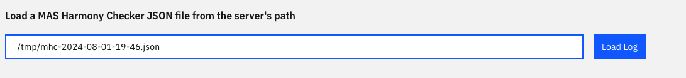

Maximo-CPI Harmony Checker is a new utility that use short and long term snapshots to addresses specific best practices for deployment of Maximo App Suite. It can assist in pinpointing areas that need improvement and provide actionable insights for optimizing the MAS deployment.
Harmony Check Data Review
-
Record or download the collection json file path. When Data collection process is completed, it returns the path to the MHC JSON file.
-
Review the json file:
-
in docker:
- Launch the mcpi viewer url (http://localhost:8888) in the browser
- review the data: Under Load a MAS Harmony Checker JSON file from the server's path, enter the path to the MHC JSON file e.g. /tmp/mhc-2024-08-01-19-36.json Below is the sample snapshot 
-
in openshift:
- go to maximo-cpi project -> Networking -> Routes
- click on mcpi-viewer-route url
- review the data: Under Load a MAS Harmony Checker JSON file from the server's path, enter the path to the MHC JSON file e.g. /tmp/mhc-2024-08-01-19-36.json.
-
Tab Details
| Tab Name | Coverage | Use Scenario |
|---|---|---|
| Cluster | Compute Resources Statistics (e.g. over-commit ratio); best practice recommendations; performance alerts | - Identify any missing or incorrect settings that not follows MAS Best Practice - Verify the overall cluster resource allocation and justify if the cluster is over/under provisioned - Identify performance alerts, configuration correction |
| Nodes | Node Status, Resource Statistics | - Identify performance issues at the node level. - Understand the resource usage trendency at the node level. |
| Namespaces & Pod Spec | Aggregate resources by namespace and pods. | - Identify resource allocations by namespace or pod - Used for prediction development |
| Certificate | Identify certificates that have expired or are about to expire | Certificate renewal configuration and alerts |
| MAS Deployment | Cluster-wide MAS Deployment Status and Statistic | Identify the deployment version and any failure status app at the cluster level. Suitable for multi-deployment environments. |
| MAS Namespaces & Pods | Aggregate resources statistics by MAS-related namespace and pods only | - Understand the resource usage trendency at the node level. - Identify performance issues at the application/pod level by usage details. (Second Step) |
| Performance Analytics | Performance Alert Heatmap; Performance Message Details | - Identify performance issues at the application/pod level (First Step) |
| Resource Optimization | Pod Resource Adjustment Recommendation to reduce footprint | Reducing resource requests to minimize the overall deployment footprint. |
| Storage | List the insights of Ephemeral Storage and Persistent Volume Claims | Identify the Storage usage, availability troubleshooting, analysis, and alerts. |
| About | List the current version, Harmony Checker environment variables, and Node/Pod counts. | Verify the utility version, default setting and filter |
Use Cases: Minimizing footprint
- Step 1: Eliminate the surplus nodes if exist
- Step 2: Balance CPU and Memory Request%; Align CPU and Memory Requests to match hardware specifications, such as a ratio of 1:4 or 1:8.
- Step 3: Continuously reduce the resource requests for pods/containers to enhance utilization. Ideally, aim for resource utilization that exceeds the resource requests and approaches 60–70% of the cluster capacity.
- Repeat Step 1 – 3 if needed
Use Case: Performance troubleshooting and configuration checking
- Step 1: Heatmap viewer provides the problematic pods and nodes
- Step 2: Maximo CPI viewer provides the metric details
- Step 3: Identify the severity and functional impacts
- Step 4: Vertically and horizontally adjust the pod/service/node and apply the recommended OpenShift Configuration if needed
- Repeat Step 1 – 4 if needed